Nyzo version 618 (commit on GitHub) adds transaction indexing for the client.
This version does not affect any run modes. The functionality implemented will be used by the client in a future version.
When using the Nyzo blockchain for general data storage, the ability to index and efficiently search for transactions is necessary. This version adds simple transaction indexing and retrieval. In a future version, this functionality will be activated and wired into the client's transaction-search command. The Nyzo Chrome extension will then be able to use the API version of this command to efficiently retrieve, among other data, game states.
So, this version is just a step to playing Falken's Maze (well, actually, tic-tac-toe first) on Nyzo.
The TransactionIndexer class implements indexing. A preference is provided to allow indexing to be disabled. A subdirectory of the Nyzo data root directory stores the index files. Constants are defined for the byte size of an index entry and the maximum number of transactions that will be returned in a single query.
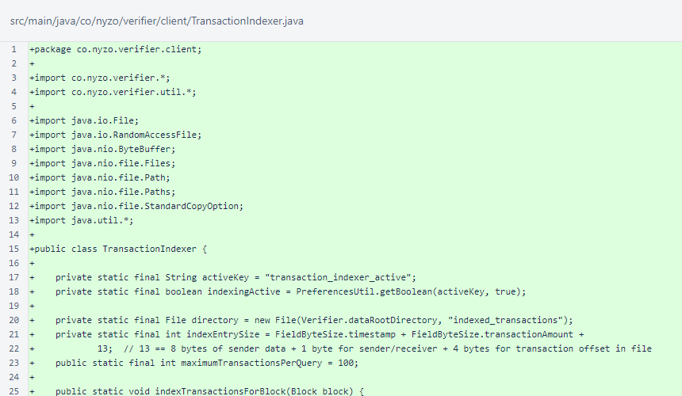The TransactionIndexer.indexTransactionsForBlock() method implements indexing at the top level. All standard transactions in a block are indexed for both the sender and receiver. The transactions are first written to a file containing a list of all transactions sent or received by an account. Then, an index entry is written referencing the list entry. The ordering of these writes is important. Each file is written in a manner that is effectively atomic, and writing the list entry first ensures that no index entries reference missing list entries, regardless of when the process might be interrupted.
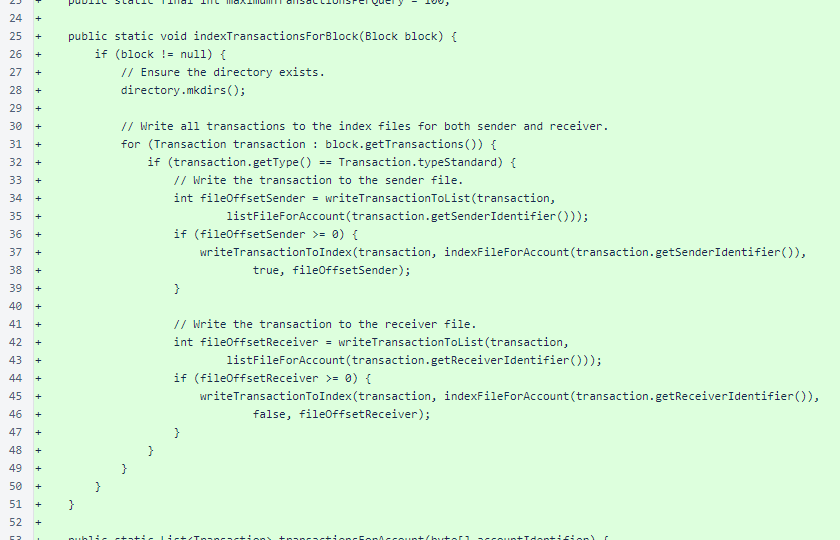The TransactionIndexer.transactionsForAccount() method implements retrieval. Currently, this method returns only the newest transactions in an account, up to the limit of 100. Transaction selection is performed on the index file. Then, the transactions are retrieved from the list file using the offsets provided by the index file. This method will evolve to provide paging, searching on timestamp and block ranges, and filtering on sender-data prefixes.
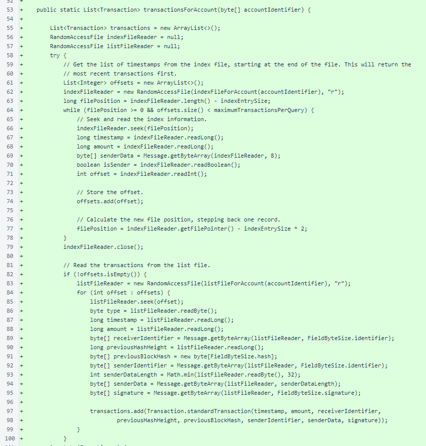Exceptions are logged, and the shorthand safeClose() method is used to ensure that the files are properly closed.
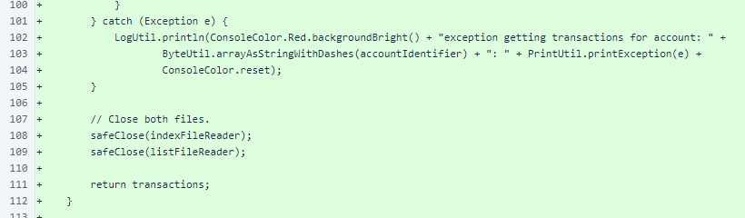The TransactionIndexer.writeTransactionToList() method appends the bytes of a Transaction object to the end of the specified list file.
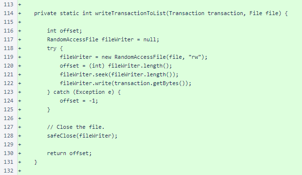The TransactionIndexer.writeTransactionToIndex() method is slightly more complex. To keep the index entries in order on ascending timestamp without requiring indexing to be performed in order, the index file is rewritten to a temporary file, inserting the index entry at the appropriate point. This conserves memory, because it reads and writes only a single entry at a time.
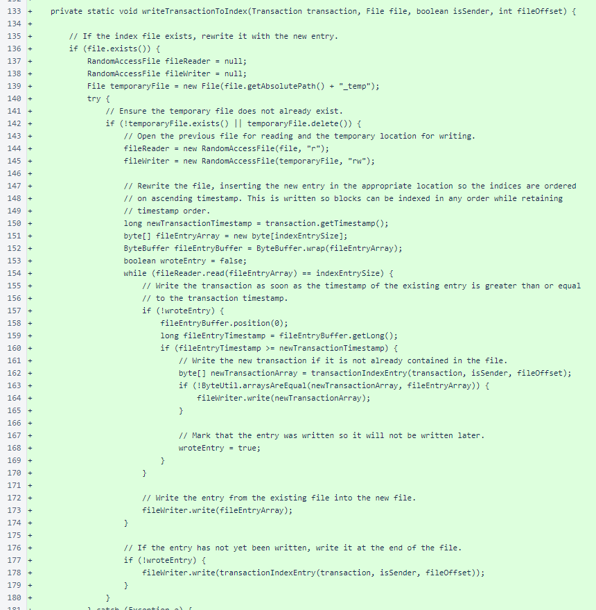The safeClose() method is used to ensure that the files are properly closed, and the temporary file is moved atomically to replace the previous index file. This ensures that the worst case of an abruptly terminated indexing operation would be a single orphan entry in the transaction list file, and there are no situations that would result in a corrupt index file.
Exceptions are logged, and a special case is provided for the first index entry in the file.
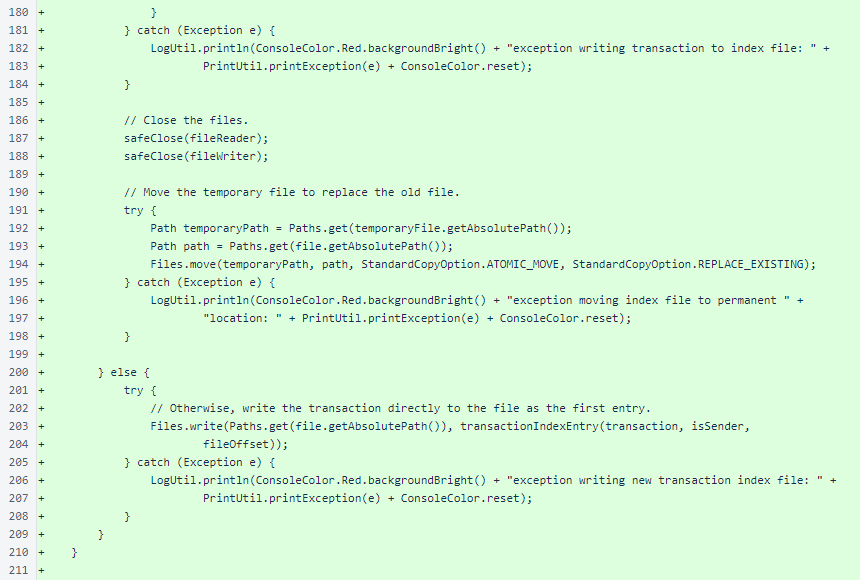The TransactionIndexer.listFileForAccount() and TransactionIndexer.indexFileForAccount() methods provide consistent paths for their respective files.
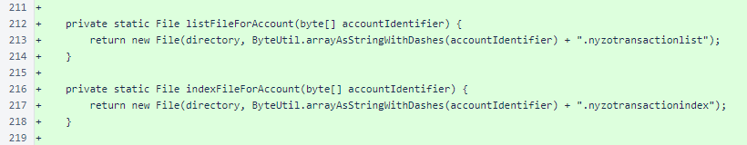The TransactionIndexer.transactionIndexEntry() method serializes some data useful for transaction lookup into a fixed-width entry. The fixed-width entry, combined with ordering on timestamp, will allow easy binary searches to find start and end indices for searches limited on timestamp or block-height ranges.
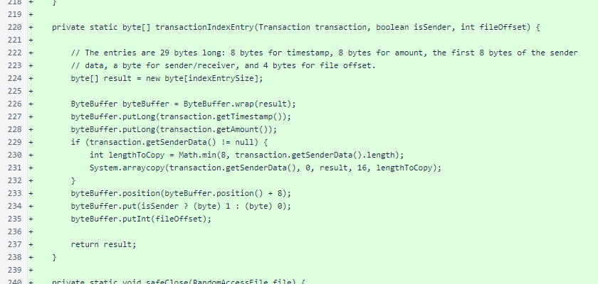The TransactionIndexer.safeClose() method is used to improve readability of other methods.
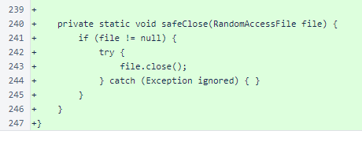The TransactionIndexerTest was added to the test suite. We now ensure these tests complete successfully before each code release, and we are working to improve test coverage.

The remainder of additions in this version are in TransactionIndexerTest. This is a typical implementation of the NyzoTest interface. A main() method allows this test class to be run individually.
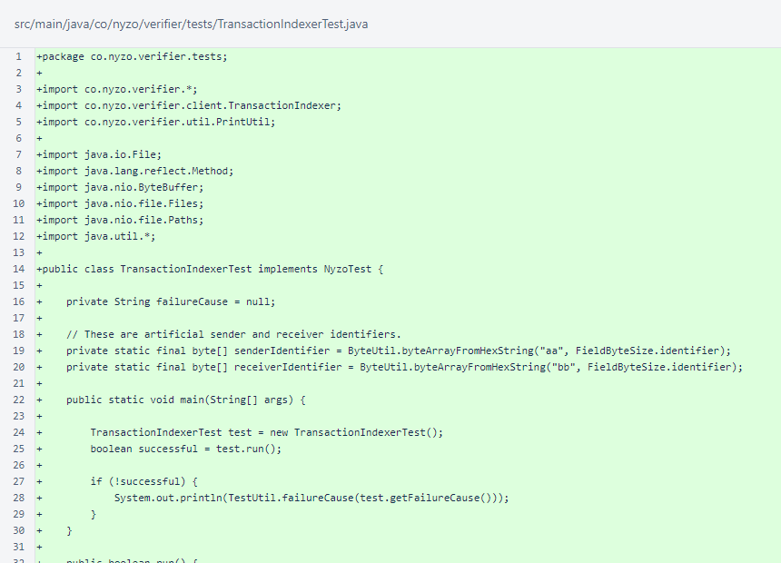The TransactionIndexerTest.run() method is the top level of the test. Java reflection is used to get the paths of some files used internally by TransactionIndexer. The files are deleted to make the test idempotent.
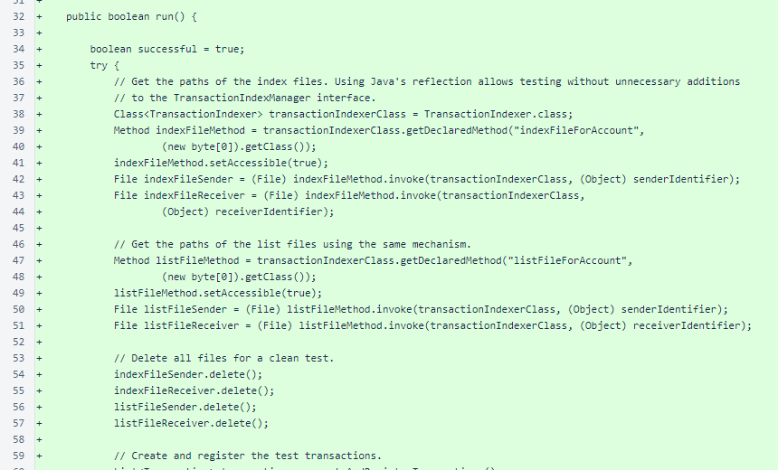A set of test transactions is created and indexed. The content of the list files for the accounts is checked. The content of the index files is checked. Finally, the transaction lookup is checked.
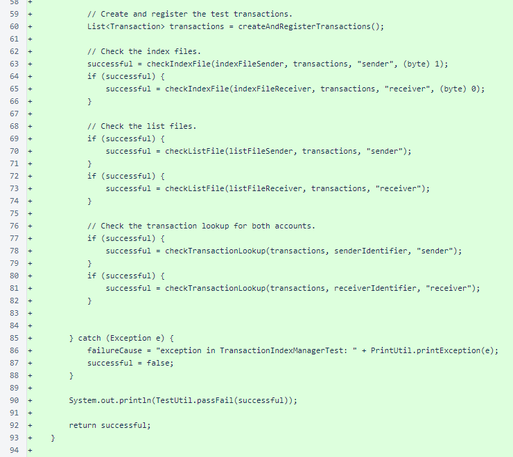A small set of absurd transactions is created. These are wrapped in a block and indexed. Note just how ridiculous the values in the transactions are. If any validation logic were applied, the transactions would all be removed before indexing. When logic is able to handle unreasonable values, however, testing such unreasonable values can be useful for better understanding the logic's behavior in extreme cases.
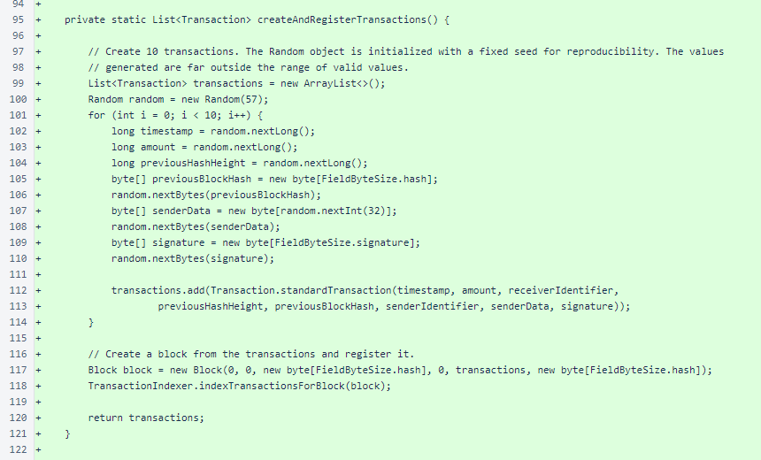The TransactionIndexerTest.checkIndexFile() method sorts the input transactions to ensure proper ordering in the index file. The timestamp and amount are checked.
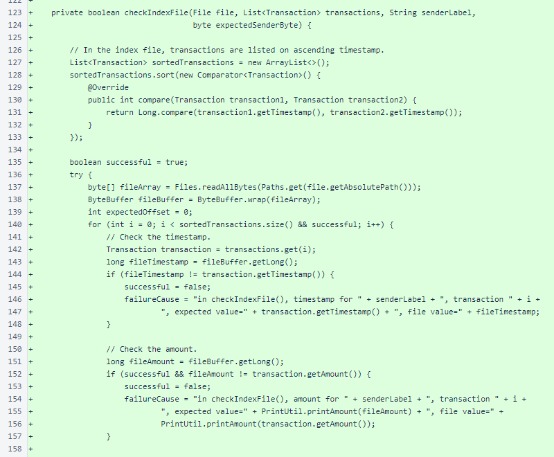The sender data is checked, and the sender byte (sender/receiver) is checked. The file offset is not yet checked. Any exception also results in test failure.
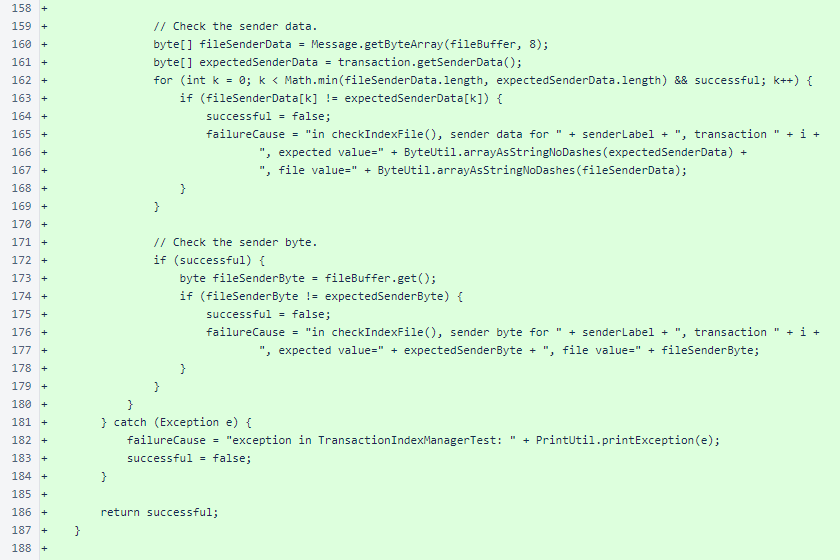In TransactionIndexerTest.checkListFile(), the bytes of all transactions are checked in the order they were added.
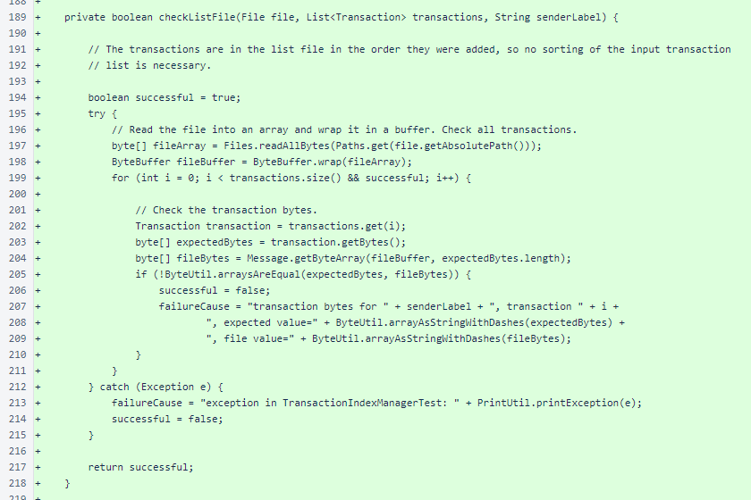The TransactionIndexerTest.checkTransactionLookup() method retrieves transactions using the public TransactionIndexer.transactionsForAccount() method. The size of the retrieved set is checked.
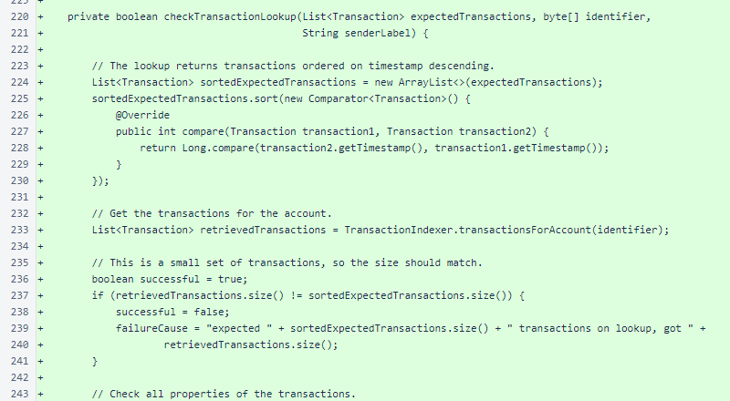The type (2: standard transaction) is checked. The timestamp, amount, and sender identifier are checked.
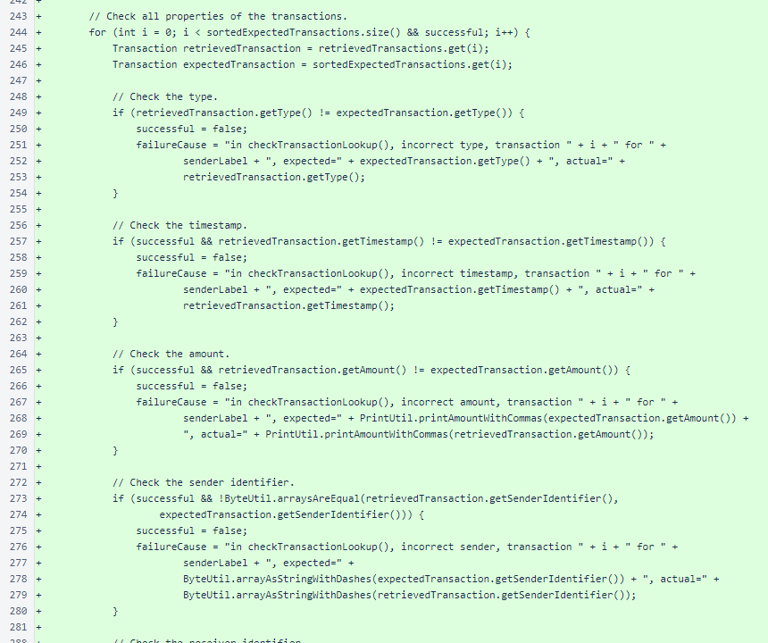The receiver identifier and previous-hash height are checked. The previous-block hash of the input and output transactions are checked separately, and this field is not expected to be the same on output as on input.
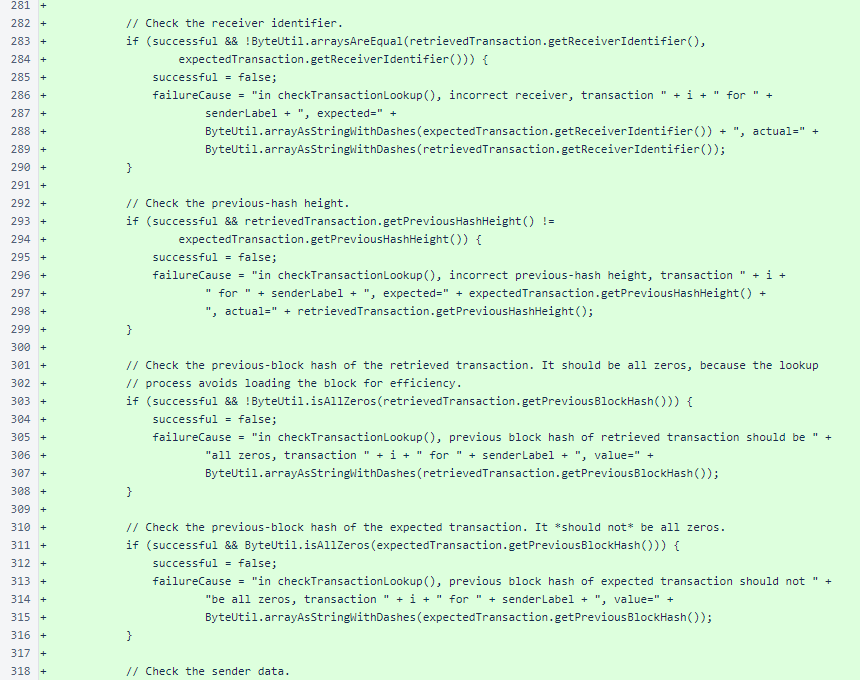The sender data and signature are checked.
The getFailureCause() method is implemented as required by the NyzoTest interface.
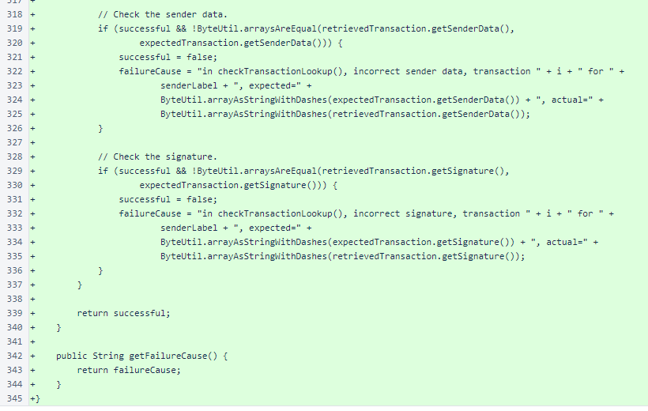